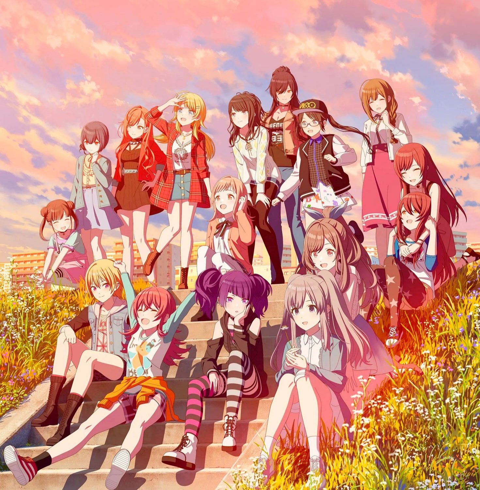

mi pagina sobre mi anime favorito
es una saga de idols de hace un buen de años y con el tiempo en japon se hizo muy popular
lo elegi porque cuando lo vi fue un anime que me encanto mucho
de importancia tiene mucho ya que ahi tengo muchos personajes favoritos y lindos

Se anunció una adaptación a serie de televisión de anime el 19 de marzo de 2023.Es producida por Polygon
Se anunció una segunda temporada de 12 episodios durante el concierto "The Idolmaster Shiny Colors 6th Live Tour Come and Unite! Brilliant Bloom" el 3 de marzo de 2024. Al igual que la primera temporada, se proyectó en Japón como tres películas, que se estrenaron el 5 de julio, el 23 de agosto y el 20 de septiembre de 2024.
lo elegi porque es el anime que mas me gusto cuando lo vi el año pasado, lo que mas me gusta son sus personajes y canciones,descubri que tenian juegos de consolas